UCI SMS Spam Collection
Phân tích dữ liệu và so sánh mô hình AI05. Chỉ huấn luyện trên UCI tiếng Anh. Mọi mô hình dùng cùng tập huấn luyện và validation BTC đã khóa.
Có 30 cấu hình siêu tham số được thử trên cùng 5 fold train. NB/Complement NB: alpha = 0.1, 0.5, 1. Logistic Regression và hai SVM: C = 0.1, 1, 4, 10; class_weight = None hoặc balanced. Baseline BTC giữ TF-IDF từ 1 đến 2, sublinear_tf=True, MultinomialNB alpha=0.5. Adapter đọc TSV bằng QUOTE_NONE để giữ dấu nháy nguyên văn; không sửa mã vendor. Mọi vocabulary và IDF chỉ fit trong train của mỗi fold.
Lựa chọn trên train bằng 5-fold OOF Spam F1, hòa thì Ham FPR thấp hơn, rồi ID. Mỗi họ mô hình chọn tham số theo cùng tiêu chí OOF; giữ ngưỡng mặc định, không tinh chỉnh trên validation. Mô hình được chọn: Linear SVM, Ký tự 3 đến 5. F1 validation cao nhất thuộc Multinomial NB, Tối ưu alpha, từ 1 đến 2: 95.5102%. Kết quả này không dùng để chọn lại mô hình hoặc tham số. Bảng validation dùng báo cáo, không dùng chọn lại cấu hình. Web và Android bản nộp dùng cùng SVM được chọn bằng CV trên train.
Validation đã được xem trước, không phải test mù. Audit BTC ghi 19 mẫu validation gần trùng train; loại trùng chính xác không loại hết gần trùng. Không tuyên bố kết quả này bảo đảm hiệu quả ngoài thực tế.
Tham số được chọn và F1 OOF trên train| Cấu hình | Tham số | F1 Spam OOF |
|---|
| Multinomial NB, Baseline BTC, từ 1 đến 2 | {'alpha': 0.5} | 79.3427% |
| Multinomial NB, Tối ưu alpha, từ 1 đến 2 | {'alpha': 0.1} | 92.7536% |
| Complement NB, Từ 1 đến 2 | {'alpha': 0.1} | 93.2171% |
| Logistic Regression, Từ 1 đến 2 | {'C': 10.0, 'class_weight': 'balanced'} | 93.4378% |
| Linear SVM, Từ 1 đến 2 | {'C': 10.0, 'class_weight': None} | 93.7188% |
| Linear SVM, Ký tự 3 đến 5 | {'C': 1.0, 'class_weight': 'balanced'} | 95.9839% |
Cùng validation BTC; Spam là lớp dương| Mô hình | F1 Spam | Precision Spam | Recall Spam | Ham FPR | TN | FP | FN | TP |
|---|
| Multinomial NB, Baseline BTC, từ 1 đến 2 | 86.2222% | 100.0000% | 75.7812% | 0.0000% | 904 | 0 | 31 | 97 |
| Multinomial NB, Tối ưu alpha, từ 1 đến 2 | 95.5102% | 100.0000% | 91.4062% | 0.0000% | 904 | 0 | 11 | 117 |
| Complement NB, Từ 1 đến 2 | 92.6070% | 92.2481% | 92.9688% | 1.1062% | 894 | 10 | 9 | 119 |
| Logistic Regression, Từ 1 đến 2 | 93.3852% | 93.0233% | 93.7500% | 0.9956% | 895 | 9 | 8 | 120 |
| Linear SVM, Từ 1 đến 2 | 94.4000% | 96.7213% | 92.1875% | 0.4425% | 900 | 4 | 10 | 118 |
| Linear SVM, Ký tự 3 đến 5 | 95.1220% | 99.1525% | 91.4062% | 0.1106% | 903 | 1 | 11 | 117 |
Phân bố nhãn Ham và Spam
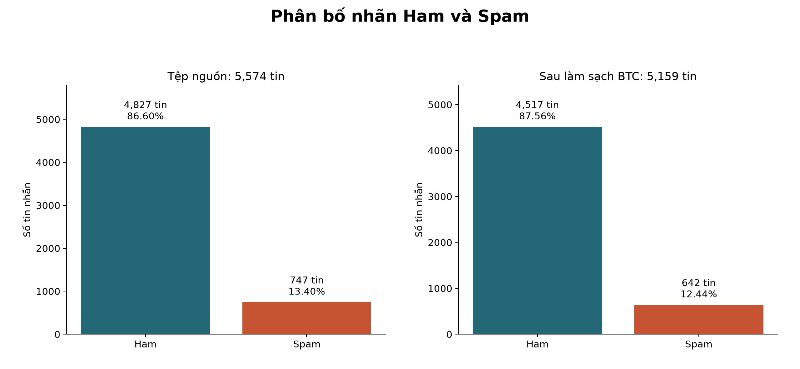
Bản SVGLàm sạch và chia dữ liệu
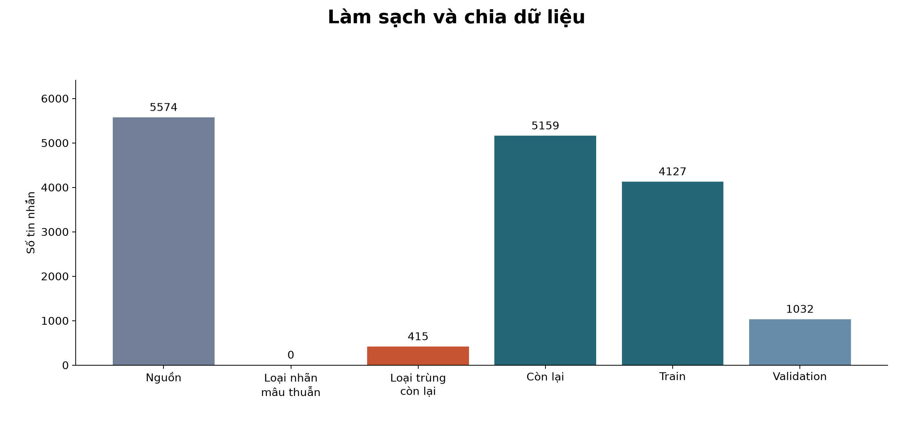
Bản SVGĐộ dài tin nhắn theo lớp
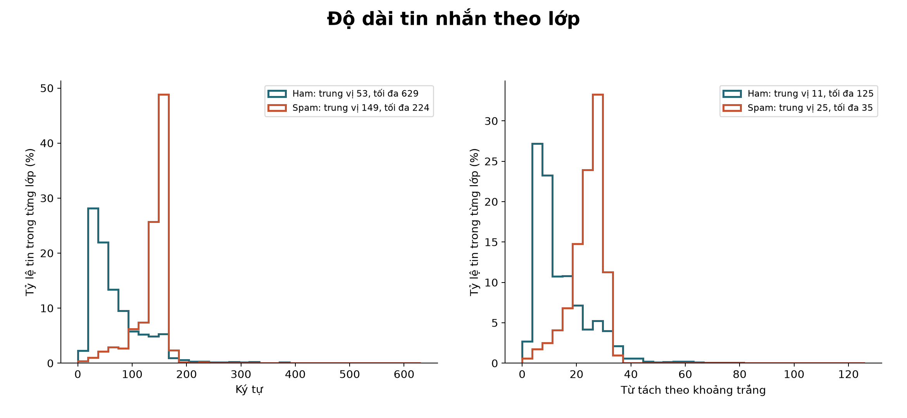
Bản SVGDấu hiệu văn bản cơ bản
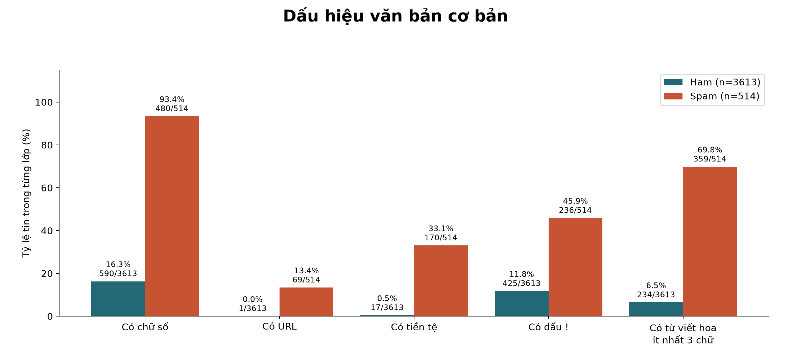
Bản SVG12 từ xuất hiện nhiều nhất trong từng lớp
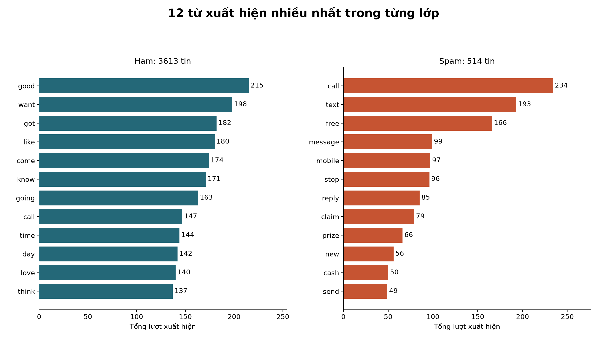
Bản SVG10 cụm từ xuất hiện nhiều nhất trong từng lớp
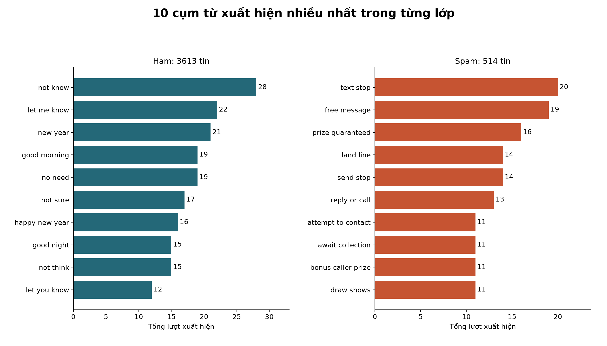
Bản SVGTừ phổ biến trong tin Ham
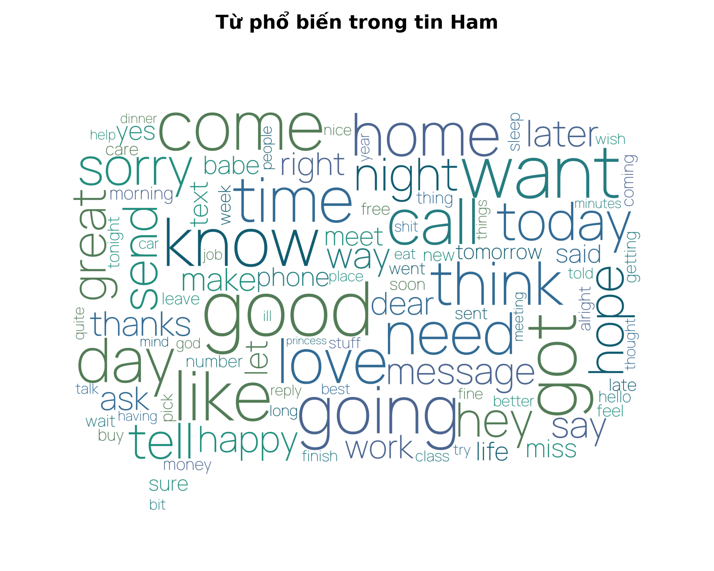
Bản SVGTừ phổ biến trong tin Spam
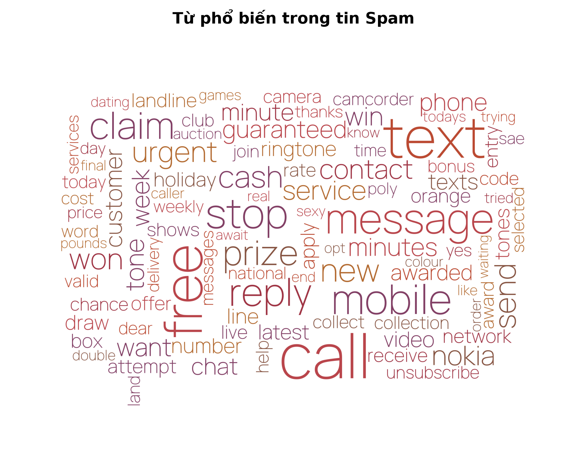
Bản SVGBaseline BTC và các cấu hình sau tối ưu
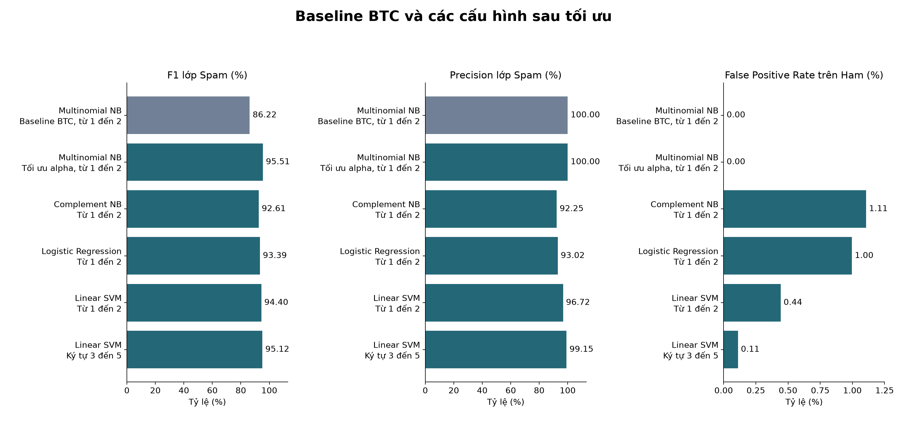
Bản SVGPrecision và Recall sau tối ưu
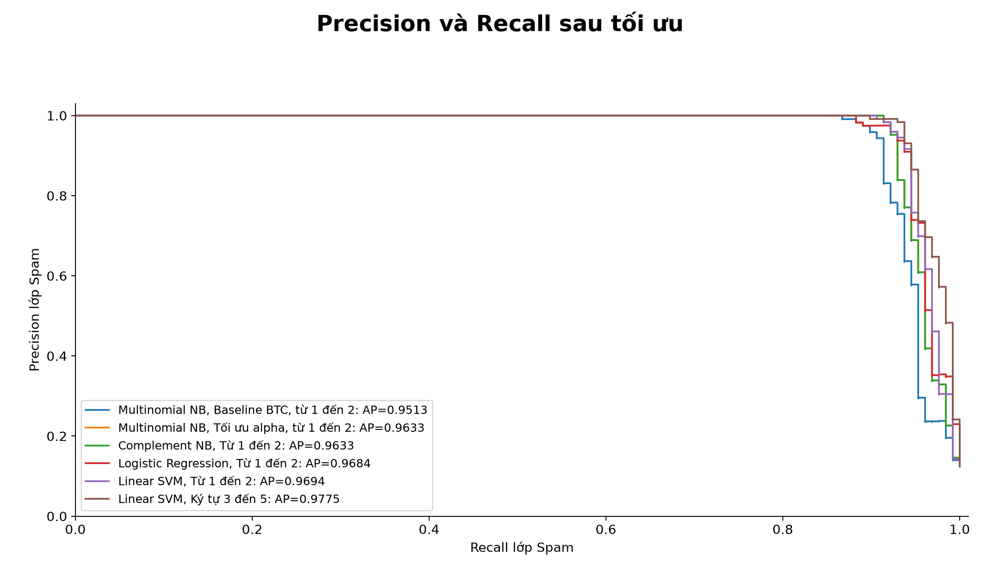
Bản SVGKết quả trước và sau chọn siêu tham số
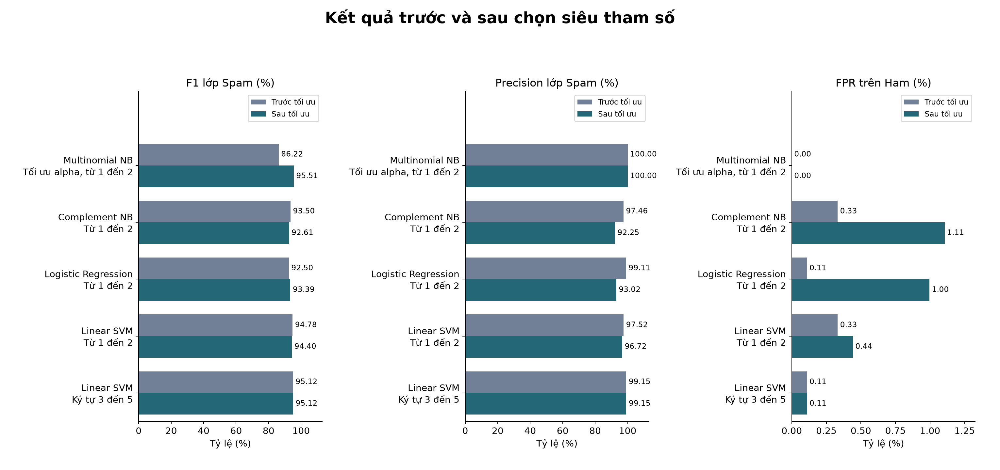
Bản SVGĐiểm SVM là khoảng cách quyết định, không phải xác suất tin cậy đã hiệu chỉnh. Điểm predict_proba của NB và Logistic Regression cũng chưa được hiệu chỉnh. Ham không chứng minh an toàn; Spam không xác nhận lừa đảo.
Nguồn: UCI SMS Spam Collection. Số liệu đầy đủ: evidence.json, metrics.csv, keywords.json, signals.json. Tham số, hash dữ liệu, split và phiên bản thư viện: plan.json. Chọn mô hình và kết quả OOF: selection.json.